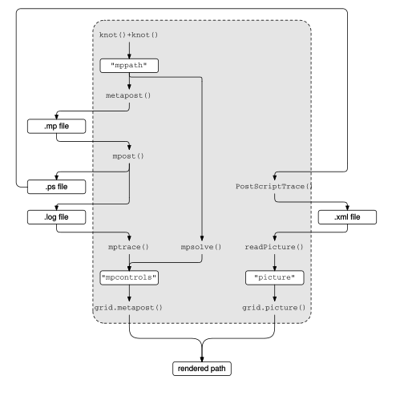

http://orcid.org/0000-0002-3224-8858
http://orcid.org/0000-0002-3224-8858
by Paul Murrell
http://orcid.org/0000-0002-3224-8858
Version 1: Wednesday 07 November 2018

This document
by Paul
Murrell is licensed under a Creative
Commons Attribution 4.0 International License.
This report describes three different approaches to communicating
between R and MetaPost: importing the PostScript output from MetaPost;
calling the mpost program to solve MetaPost paths;
and calling the mplib library to solve MetaPost paths.
MetaPost (Hobby, 1998) is a graphics system that provides some very useful features for describing curves. For example, the following MetaPost code describes an infinity symbol from only four points: the path will pass horizontally from left to right through the first point (bottom-left), then the second point (top-right), then curve around and pass horizontally from right to left through the third point (bottom-right), then the fourth point (top-left), and finally curve around back to the starting point.
beginfig(1);
z0 = (0, 0);
z1 = (20, 10);
z2 = (20, 0);
z3 = (0, 10);
draw z0{dir 0}..z1{dir 0}..z2{dir 180}..z3{dir 180}..cycle;
endfig;
end
One way to use MetaPost is to write a standalone file
containing MetaPost code (the code above is stored in a file
called infinity.mp). This can then be processed
using the mpost program to produce a PostScript, or PNG,
or SVG
file containing the drawn curve. Typing the expression
below (in a shell)
produces an SVG file infinity.svg,
which is shown below the mpost command.
mpost -s outputformat="svg" -s outputtemplate="%j.svg" infinity.mp
The MetaPost system is often used in association with TeX documents. Another approach to using MetaPost is to include MetaPost code directly within a LaTeX document, as shown in the following code.
\documentclass[border={2pt 2pt 2pt 2pt}]{standalone}
\usepackage{luamplib}
\usepackage{hologo}
\begin{document}
\hologo{METAPOST} in a \LaTeX document:
\begin{mplibcode}
beginfig(1);
z0 = (0, 0);
z1 = (20, 10);
z2 = (20, 0);
z3 = (0, 10);
draw z0{dir 0}..z1{dir 0}..z2{dir 180}..z3{dir 180}..cycle;
endfig;
\end{mplibcode}
\end{document}
This LaTeX document must be processed with the lualatex
engine (The LuaTeX development team, 2017)
(rather than, for example, pdflatex), but this automatically
generates and embeds the MetaPost image in the resulting
PDF document (the resulting
PDF document is shown below the code).
lualatex infinity-doc.tex
The ConTeXt system (Hagen, 2018) also allows embedded MetaPost code.
This report considers the problem of integrating MetaPost with R (R Core Team, 2018). More specifically, we will look at incorporating MetaPost curves within R graphical output. Although it is also possible to draw text labels within MetaPost images, this work focuses mostly on the curve-drawing facilities of MetaPost.
This report will describe three different interfaces to MetaPost that are based on three R packages: 'grImport', 'metapost', and 'mplib'.
library(grImport) library(metapost) library(mplib)
Our goal is to produce graphical output in R, with assistance from MetaPost to produce curves. The first step is to describe a MetaPost curve within R.
Rather than write MetaPost code directly, the 'metapost' package provides functions that allow us to construct a MetaPost path in R code. For example, the following code describes the infinity symbol path that we saw earlier.
p <- knot(0, 0) + dir(0) + knot(20, 10) + dir(0) + knot(20, 0) + dir(180) + knot(0, 10) + dir(180) + cycle()
The result is a "path" object, which prints out a MetaPost equivalent ...
p
(0in,0in){dir 0}..(0.28in,0.14in){dir 0}..(0.28in,0in){dir 180}..(0in,0.14in){dir 180}..cycle
... and can be used to draw the infinity symbol in R
(the grid.metapost function will be described later).
grid.metapost(p)
The basic structure of any path is a set of knot locations,
which are defined using the knot function.
Additional information can be provided in the call to
knot. For example, we can specify the
(right) direction of the knot as shown below.
knot(0, 0, dir.right=0)
(0in,0in){dir 0}
In addition to direction, it is possible to specify
tension, curl, and explicit control points (both left and right)
in the call to knot. However, it may be more readable
to use the separate "connector"
functions that specify direction (dir),
tension (tension), curl (curl), and
control points (cp) and combine them all using the
+ operator. For example, the following two
expressions are equivalent.
knot(0, 0, dir.right=0) + knot(1, 1, dir.left=0)
(0in,0in){dir 0}..{dir 0}(0.01in,0.01in)
knot(0, 0) + dir(0) + dir(0) + knot(1, 1)
(0in,0in){dir 0}..{dir 0}(0.01in,0.01in)
There is also the function cycle to indicate that
the path is a closed path (this was used in the infinity symbol above.
In addition to the + operator for combining knots,
there are -, %+%, and %-% operators.
These correspond to the -- (straight line),
... (inflection-free path), and
--- (straight line with smooth connection)
operators in MetaPost.
These operators may only be used between two knots (not between a
call to knot
and a call to one of the connector functions like dir).
The locations of knots (and control points) can be specified
using any coordinate system from the 'grid' package, either
via the unit function, or the units
argument to knot, or by setting the
metapost.units option.
For example, the following expressions are all equivalent.
options(metapost.units="npc") knot(1, 1)
(7in,7in)
knot(1, 1, "npc")
(7in,7in)
knot(unit(1, "npc"), unit(1, "npc"))
(7in,7in)
options(metapost.units="pt")
The benefit of the more verbose forms is finer control. For example, with the last form, it is possible to specify the x-location of a knot relative to a different coordinate system than the y-location of the knot.
knot(unit(1, "npc"), unit(1, "in"))
(7in,1in)
Having defined a MetaPost path in R, the next step
is to draw the path. One way to do this is to use
the mpost program to draw the curve as a PostScript
image and then import the PostScript image with the 'grImport' package.
The 'metapost' package provides two functions to help with this
approach.
The metapost function can be used to
convert the MetaPost path in R into a MetaPost file.
options(metapost.units="in") scurve <- knot(0, 0) + dir(0) + dir(0) + knot(1, 1) scurve
(0in,0in){dir 0}..{dir 0}(1in,1in)
mpcode <- metapost(scurve, "scurve.mp")
The result returned by metapost is a character version
of the MetaPost code that it wrote to the MetaPost file.
cat(mpcode, sep="\n")
beginfig(1);
draw (0in,0in){dir 0}..{dir 0}(1in,1in);
endfig;
end
The mpost function can be used to run the mpost
program on a file.
mpost("scurve.mp")
This produces a PostScript file, "scurve.1" in this case,
which we can import and
draw using 'grImport'.
library(grImport)
PostScriptTrace("scurve.1", "scurve.xml") scurvePic <- readPicture("scurve.xml") grid.picture(scurvePic)
In the previous section, we had mpost both
solve and draw a MetaPost path
and then we imported the drawing.
Another option is to use mpost just to solve
the path, but to do the drawing in R.
This is the purpose of the mptrace function
(from the 'metapost' package).
The mptrace function works
with the output from a "log" file that is produced by mpost.
When we call the mpost function with tracing=TRUE
(the default), mpost produces a PostScript file
("scurve.1" in the example above) and a log file
("scurve.log" in the example above). The log file
contains information about the Bezier curves that MetaPost has
chosen in order to represent the MetaPost path.
The mptrace function reads that log information into
R. Note that the locations of the control points for the Bezier
curves are given in "big points" (or "printer's points"), which
are 1/72 inches.
scurveTraced <- mptrace("scurve.log") scurveTraced
[[1]] $x [1] 0.0000 39.7645 32.2355 72.0000 $y [1] 0 0 72 72 attr(,"class") [1] "mpcontrols" attr(,"class") [1] "mpcontrolList"
The grid.metapost function (from the 'metapost' package)
can take that path information and draw the appropriate Bezier curve.
grid.metapost(scurveTraced)

The grid.metapost function will also accept a
MetaPost path directly,
in which case it performs all of the necessary steps,
calling metapost to create a MetaPost file,
calling mpost to produce log output,
calling mptrace to read the log output, and
then drawing the final result.
grid.metapost(scurve)

A MetaPost path in R can be specified using any 'grid'
coordinate system, but the MetaPost code that the path
is converted into is described in terms of inches.
The 'grid' coordinate systems are always relative to the
current 'grid' viewport, so the meaning of a location
like unit(1, "npc"), in terms of inches,
depends on the current viewport.
In other words, the physical size of the MetaPost path is
fixed at the moment that it is converted to MetaPost code.
This should not cause any difficulty if we call
grid.metapost directly on a MetaPost path,
because the conversion to MetaPost code and the drawing of
the solved path will happen at once, in the same viewport.
However, if we call metapost (and mpost
and mptrace) ourselves, for example, so that we can
reuse the same path in multiple places, we need to be aware that
the physical size of the path will be fixed no matter where
we draw it.
The following code demonstrates this idea by drawing
a MetaPost path in two different viewports, one smaller and
one larger. The (thin, opaque) black
lines are drawn by calling grid.metapost
directly on the path, so they resize with the viewport.
The (thick, semitransparent)
red lines are drawn by calling metapost
within the first viewport and calling grid.metapost
on the solved path, so it remains at the smaller size in the larger
viewport.
options(metapost.units="npc") p <- knot(0, 0) + dir(0) + dir(0) + knot(1, 1) pushViewport(viewport(0, 0, unit(1, "in"), unit(1, "in"), just=c("left", "bottom"))) grid.rect(gp=gpar(col=NA, fill="grey80")) grid.metapost(p) metapost(p, "fixed.mp") mpost("fixed.mp") fixed <- mptrace("fixed.log") grid.metapost(fixed, gp=gpar(col=rgb(1,0,0,.5), lwd=3)) popViewport() pushViewport(viewport(unit(1.5, "in"), 0, unit(2, "in"), unit(2, "in"), just=c("left", "bottom"))) grid.rect(gp=gpar(col=NA, fill="grey80")) grid.metapost(p) grid.metapost(fixed, gp=gpar(col=rgb(1,0,0,.5), lwd=3)) popViewport()
When knot locations in 'grid' coordinates are converted
to inches in MetaPost code, the values are rounded
(by default to 2 decimal places).
More decimal places can be retained via the digits
argument to metapost (or to grid.metapost
if we give it a path directly).
p <- knot(0, 0) + dir(0) + dir(0) + knot(1, 1, "cm") cat(metapost(p), sep="\n")
beginfig(1);
draw (0in,0in){dir 0}..{dir 0}(0.39in,0.39in);
endfig;
end
cat(metapost(p, digits=4), sep="\n")
beginfig(1);
draw (0in,0in){dir 0}..{dir 0}(0.3937in,0.3937in);
endfig;
end
The approach described in the previous section
involves creating a MetaPost path in R,
writing a MetaPost file
(with metapost), then generating a log file
(with mpost), and finally
reading the log file back into R (with mptrace).
That approach involves both reading and writing to the file
system. An alternative is provided by the 'mplib' package,
which provides an interface to the mplib MetaPost
library (Hoekwater and Scarso, 2018) and allows us to work entirely in resident
memory.
The mpsolve function from the 'mplib' package
takes a MetaPost path and uses calls to mplib
to solve the path. The result is a set of Bezier curve control
points (similar to the mptrace function from
'metapost').
library(mplib)
scurveSolved <- mpsolve(scurve) scurveSolved
[[1]] $x [1] 0.0000 39.7645 32.2355 72.0000 $y [1] 0 0 72 72 attr(,"class") [1] "mpcontrols" attr(,"class") [1] "mpcontrolList"
The grid.mplib function (from 'mplib')
takes the solved path and draws the appropriate Bezier curves.
grid.mplib(scurveSolved)
As with grid.metapost, grid.mplib will
also accept a MetaPost path directly (and calls
mpsolve itself).
grid.mplib(scurve)

The value returned by mpsolve is compatible
with the value returned by mptrace, so it can
also be passed to grid.metapost for drawing.
grid.metapost(scurveSolved)
The MetaPath description in R, which is described in terms
of 'grid' coordinates, is converted to "big points" (1/72 inches)
in the call to mpsolve. This means that
the physical size of the solved path is dependent on the 'grid'
viewport in effect when mpsolve is called.
An important limitation of the 'mplib' package is that
it is built upon a shared library called libmplib.so
and, unfortunately, that library does not exist publicly.
However, steps to build the shared library are
given in Murrell, 2018a and those
instructions are encoded in a
Dockerfile
(which has been used to produce the Docker image
pmur002/mplib-shared).
The point of being able to import MetaPost paths into R is not just so that we can replicate a MetaPost image. The value in being able to import MetaPost paths into R is that this allows us to combine the strengths of MetaPost graphics with the strengths of R graphics.
As a simple example, the following code makes use of a MetaPost path to connect a label with a data point in a 'lattice' plot (). MetaPost makes it easy to describe the curve and R makes it easy to describe the plot.
library(lattice) xyplot(mpg ~ disp, mtcars) x <- mtcars$disp[1] y <- mtcars$mpg[1] lab <- rownames(mtcars)[1] downViewport("plot_01.panel.1.1.vp") grid.picture(scurvePic, x=unit(x, "native"), y=unit(y, "native"), width=unit(1, "in"), height=unit(1, "in"), just=c("left", "bottom"), exp=0) grid.text(lab, unit(x, "native") + unit(1, "in"), unit(y, "native") + unit(1, "in"), just="left")
Another example of combining graphics facilities in R
with MetaPost is to use MetaPost to define a set of Bezier
control points for a path and then use the R package 'vwline'
(Murrell, 2018c)
to draw a variable-width version of that path.
The following code defines a MetaPost path and uses
metapost, mpost, and
mptrace to generate Bezier control points
for the solved path. We then draw a variable-width Bezier
curve based on those control points (with grid.offsetBezier
from the 'vwline' package).
library(grid) library(vwline)
options(metapost.units="npc") p <- knot(0, 0) + dir(0) + dir(0) + knot(1, 1) metapost(p, "fig.mp") mpost("fig.mp", tracing=TRUE) controls <- mptrace("fig.log")[[1]] grid.offsetBezier(controls$x, controls$y, default.units="pt", w=widthSpline(unit(c(0, 5, 0), "mm"), shape=1))
The recent addition of the 'gridBezier' package (Murrell, 2018b) means that this also works for Bezier splines, which consist of more than one Bezier curve. The following code draws a variable-width version of the infinity symbol that we began with.
options(metapost.units="mm") p <- knot(0, 0) + dir(0) + knot(20, 10) + dir(0) + knot(20, 0) + dir(180) + knot(0, 10) + dir(180) + cycle() pushViewport(viewport(width=unit(1, "in"), height=unit(1, "in"))) metapost(p, "fig.mp") mpost("fig.mp", tracing=TRUE) controls <- mptrace("fig.log")[[1]] grid.offsetBezier(controls$x, controls$y, default.units="pt", open=FALSE, w=unit(c(3, 1, 3), "mm"))
As a final example of mixing R graphics and MetaPost graphics, the width of a variable-width Bezier spline in 'vwline' can itself be described by a Bezier spline. The following code uses MetaPost to generate Bezier control points for specifying the width of a variable-width line. The diagram below the code shows the Bezier spline that we have defined. The left edge of the diagram represents the start of the variable-width line and the right edge of the diagram represents the end of the variable-width line; the height of the black line represents the width of the variable-width line.
options(metapost.units="mm") widthPath <- knot(0, 2) + dir(0) + dir(0) + knot(3, 2) + knot(6, 1) + dir(NA) + dir(0) + knot(9, 2) metapost(widthPath, "width.mp") mpost("width.mp", tracing=TRUE) widthControls <- mptrace("width.log")[[1]] w <- BezierWidth(unit(widthControls$y, "pt"), d=widthControls$x/max(widthControls$x))
The code below applies that Bezier width spline to the infinity symbol.
options(metapost.units="mm") pushViewport(viewport(width=unit(1, "in"), height=unit(1, "in"))) metapost(p, "fig.mp") mpost("fig.mp", tracing=TRUE) controls <- mptrace("fig.log")[[1]] grid.offsetBezier(controls$x, controls$y, default.units="pt", open=FALSE, w=w)
The 'metapost' package provides functions (e.g., knot)
for describing a MetaPost
path in R. A MetaPost path description can be written to a MetaPost file
using the metapost function. A MetaPost file can
be processed, to solve the path and produce PostScript output,
using the mpost function. A solved MetaPost path
(in the form of a log file produced by mpost) can be
read into R using the mptrace function. A solved
MetaPost path in R can be drawn using the grid.metapost
function.
Another way to generate a solved MetaPost path is using the
mpsolve function from the 'mplib' package
(although the 'mplib' package has complex system requirements).
Another way to draw a solved MetaPost path in R is to import the PostScript output using the 'grImport' package.
The diagram below attempts to show how these functions all relate
to each other
(the line around the top of the diagram below, from
".ps file" to PostScriptTrace(), was
described using knot and
drawn using grid.metapost).

This report has described three main approaches to combining MetaPost with R, based on three packages: 'grImport', 'metapost', and 'mplib'. In this section, we discuss the reasons for bothering with an R interface to MetaPost, and the reasons for bothering with more than one approach.
The main value of having an R interface to MetaPost has been demonstrated in the previous section: we can combine the strengths of MetaPost's path description language with the strengths of R graphics (for drawing plots).
One benefit of the R tools for generating MetaPost paths
(functions like knot) is that we can work more
comfortably in R, writing R code rather than character values that
contain MetaPost code. It is also useful to have the general-purpose
programming language facilities of R to generate paths. For example,
the following R code uses vectorisation to generate several paths
at once.
p <- knot(0, 0) + dir(45) + dir(0:9*-10) + knot(unit(6, "cm"), 0) grid.metapost(p)
This requires an explicit loop in MetaPost.
beginfig(7)
for a=0 upto 9:
draw (0,0){dir 45}..{dir -10a}(6cm,0);
endfor
endfig;
One reason for having more than one interface between R and
MetaPost is flexibility.
The design of the 'metapost' package (as shown in the diagram
from the previous section) allows for the functions to be used
in other ways than those described so far.
For example, the 'grImport' package can import
MetaPost output regardless of whether it was produced by
functions from the 'metapost' package. Similarly, the mpost
function can be used to run mpost on a MetaPost file
regardless of whether that file was generated by metapost.
Finally,
mptrace can be used to read information from a
MetaPost log file regardless of whether the log file was produced
by functions from 'metapost'.
The functions mptrace and mpsolve
are also designed to produce values (Bezier control points)
that could be used by
functions other than grid.metapost or
grid.mplib (as demonstrated by the
variable-width line examples in the Integrating R and MetaPost graphics Section).
Another reason for choosing one MetaPost approach over another is
the range of images that each approach supports.
Both the 'metapost' and 'mplib' packages are focused on
just generating Bezier control points from a MetaPost path description.
This means that there are limits on the sort of MetaPost image
that can be described (there are limits on
the sort of path description that is possible with
functions like knot) and there are limits on
the sort of MetaPost image that can be read into R.
Further work could look at reducing these limits, though there will
remain limits on what is possible with the 'mplib' approach
because the MetaPost library API only exposes a subset of
the MetaPost features.
The 'grImport' approach, by comparison, will handle any MetaPost
image, including images that contain text.
On the other hand, the path information that is returned by
mptrace and mpsolve is easier
to work with and easier to combine with other graphical output
than an image that was imported with 'grImport'.
This is because the value returned by
mptrace and mpsolve is just the location
of Bezier control points, whereas an imported image
is a path that may be embedded within the context of a larger image
with other components. This means that we may need to subset
the imported image and/or be required to transform coordinates
to get the imported image to align with other graphical output.
The examples and discussion in this document relate to version 1.0-0 of the 'metapost' package, version 1.0-0 of the 'mplib' package, version 0.2-1 of the 'vwline' package, and version 1.0-0 of the 'gridBezier' package.
Installing 'mplib' requires a Docker container pmur002/mplib (the Docker container for this report will also suffice)
This report was generated within a Docker container (see Resources section below).
Murrell, P. (2018). "MetaPost Three Ways" Technical Report 2018-??, Department of Statistics, The University of Auckland. [ bib ]
This document
by Paul
Murrell is licensed under a Creative
Commons Attribution 4.0 International License.